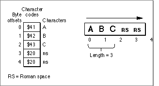
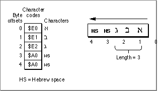

Legacy Document
Important: The information in this document is obsolete and should not be used for new development.
Important: The information in this document is obsolete and should not be used for new development.


Measuring and Drawing Lines of Text
This section describes how to lay out and draw a line of text consisting of a single style run or multiple style runs. A line of text all in the same font, script, and character attributes constitutes a single style run. A new style run begins when any of these textual characteristics change. QuickDraw relies on the construct of style runs to track these text attribute changes throughout a line of text. Before you measure or draw a text segment that constitutes a new style run, you need to set the text-related graphics port fields for that style run.This section also describes how to draw text lines that are right or left aligned, or justified. Finally, it explains how to draw explicitly scaled text, whether the lines of text are justified or not.
To draw a line of text, you first need to lay it out. If the text does not contain mixed directions, the text layout process consists of a single step: determining where to break the line. If the text contains mixed directions, the order in which you display the style runs may be different from their storage order, so you also need to determine the drawing order.
Moreover, if you want to draw a line of justified text, the process entails additional steps: you need to determine the total amount of extra pixels that remains to be distributed throughout the line of text and how to distribute these extra pixels throughout the style runs.
If you want to draw a line of text that is not justified, you can position the pen according to its alignment. You align text by positioning the pen appropriately so that the first glyph of the text line is flush against the display line's margin: at the left margin for left-aligned text, or at the right margin for right-aligned text.
Your application loops through these steps for each style run and each line of text that it measures and draws, and it needs to track the text in memory as it proceeds through each loop. Each time you measure or draw a text segment, you need to pass the beginning byte offset and its length to the QuickDraw routine. Before you call a QuickDraw measuring or drawing routine, you need to set the graphics port text-related fields to reflect the new style run's values.
These steps summarize the line layout and drawing process:
Each step covers the basics, plus any additional information you need to know to perform the step for justified or scaled text. The following sections elaborate these steps.
- Determine where to break the line.
- Determine the display order of the style runs (mixed-directional text).
- Eliminate trailing spaces (justified text).
- Calculate the slop value (justified text).
- Distribute the slop (justified text).
- Position the pen.
- Draw the text.
Determining Where to Break the Line
For text that spans multiple lines, you are responsible for controlling where a text line starts and ends. To determine where to break a line of text, first you need to know the screen pixel width of the display line. Then, taking into account all the text characteristics, you need to assess how much of the text you can display on the line, and the appropriate point to break the text.You should always break a line on a word boundary. To allow for text in different languages, use the QuickDraw and the Text Utilities routines that identify the appropriate place to break a line in any script system.
The two routines you use for unscaled text are the
StyledLineBreakandTextWidthfunctions;StyledLineBreakis described in the chapter Text Utilities in this book. Each time you callStyledLineBreakfor a style run, first you need to set the graphics port text characteristics for that style run.
If you do not want to use
- Saving the screen pixel width of each style run
- To draw justified text, you need to determine the amount of extra pixels to allocate to each style run in the text line. To determine this value, you need to know the screen pixel width of each style run. You can avoid having to measure the width of each style run twice in the text-layout process by using the
textWidthparameter of theStyledLineBreakfunction to get and save the screen pixel width of each style run. TheStyledLineBreakfunction maintains the value of thetextWidthparameter, which you initially set to the length of the display line. When you callStyledLineBreakfor each style run in the script run, it decrements this value by the width of the style run. You can calculate the screen pixel width of a style run by subtracting the current value oftextWidthfrom the display line length each time through yourStyledLineBreakloop, and save the value to be used later.
StyledLineBreak, you can use theTextWidthfunction to measure each style run, adding the returned values until the sum exceeds the display line length. You can next use the Text UtilitiesFindWordBreaksprocedure on the last style run to identify the ending location of the appropriate word in the style run, then break the text accordingly.If a space character occurs at a line's end, and more space characters follow it in memory,
StyledLineBreakbreaks the line after the final space character in memory. This obviates the need for you to check for space characters in memory, when you lay out the next line of text. However, if you do not useStyledLineBreak, you need to check for space characters at the beginning of a line of text, and increment the memory pointer beyond these space characters. You can use theCharacterTypefunction to identify space characters. For more information aboutCharacterType, see the chapter "Script Manager" in this book.Listing 3-2 calculates line breaks using
StyledLineBreak. The procedure sets the local variables, the display line length, and a value to control the line-breaking loop. Then it iterates through the text for each style run, setting the graphics port text fields for the style run and callingStyledLineBreakto identify where to break the line.Listing 3-2 Calling
StyledLineBreakto identify where to break the text line
PROCEDURE MyBreakTextIntoLines (window: WindowPtr); VAR thetextPtr: Ptr; thetextLength: LongInt; pixelWidth: Fixed; textOffset: LONGINT; StartOfLine: Point; index: Integer; tempRect: Rect; lineData: myLineArray; lineIndex: Integer; theBreakCode: StyledLineBreakCode; theStartOffset: Integer; BEGIN thetextPtr := gText.textPtr; index := 0; SetPort(window); tempRect := window^.portRect; InsetRect(tempRect, 4, 4); SetPt(StartOfLine, 10, 4); MoveTo(StartOfLine.h, StartOfLine.v); {Set up our local flags and variables.} lineIndex := 0; {This is the index into the line data.} index := 0; {This is the index into the style data.} WITH gText.runData[index] DO BEGIN thetextPtr := Ptr(ORD(gText.textPtr) + runStart); thetextLength := gText.textLength; theStartOffset := 0; END; {Start walking through the textblock.} REPEAT {For the first style run in a line, textOffset must be non-zero.} textOffset := -1; {smBreakOverFlow means that the whole style run fits on the } { line with space remaining. The routine uses that condition to } { control the loop.} theBreakCode := smBreakOverflow; {StyledLineBreak expects the width of the display area } { to be expressed as a fixed value.} pixelWidth := BSL((tempRect.right - tempRect.left), 16); WITH gText DO BEGIN WHILE (theBreakCode = smBreakOverflow) DO BEGIN WITH gText.runData[index] DO BEGIN {set the port} TextFont(font); TextFace(face); TextSize(size); {call StyledLineBreak to break the line} theBreakCode := StyledLineBreak(thetextPtr, thetextLength, theStartOffset, runEnd, 0, pixelWidth, textOffset); {now remember the information returned} lineData[lineIndex].textStartOffset := theStartOffset; {remember the beginning of this run} lineData[lineIndex].textLength := textOffset - theStartOffset; {and the length of this run length} lineData[lineIndex].styleIndex := index; {since the style information is global, just remember } { the index to that information} lineIndex := lineIndex + 1; END; {If textoffset == the end of the run, increment the } { rundata index and set theStartOffset to be the beginning } {of the next run.} IF (textOffset = gText.runData[index].runend) THEN BEGIN index := index + 1; theStartOffset := gText.runData[index].runStart; END ELSE {If textOffset <> the end of the run, the routine splits } { a run, so set theStartOffset appropriately} theStartOffset := theStartOffset + (textOffset - theStartOffset); {If there is more text, reset the offset value } { returned by StyledLineBreak} IF textOffset = thetextLength THEN LEAVE {if textOffset == the textLength there is no more} { text, so jump out of the loop} ELSE textOffset := 0; {we haven't found the line break yet, } { textOffset must be zero for all runs after } { the first in a line} END; {of while loop} END;If the text is explicitly scaled, you cannot useStyledLineBreakto determine where to break the line. This is because theStyledLineBreakfunction does not accept scaling factors. To determine where to break a line of scaled text, you can directly call the routines thatStyledLineBreakuses. The section "Using Scaled Text" on page 3-43 describes these steps.Determining the Display Order for Style Runs
Now that you know where to break the line, you need to determine the display order of the style runs that constitute the line when the text contains mixed directions; if your text does not contain mixed directions, you can skip this step.You draw style runs in their display order, which may be different from how the text is stored if it contains mixed directions. (For more information about storage order and display order, see the chapter "Introduction to Text on the Macintosh" in this book.) To determine the correct order, use
GetFormatOrder; this procedure returns the order, from left to right, in which to draw the style runs on a line.To use
GetFormatOrder, you must have organized your style runs sequentially in storage order. You passGetFormatOrderthe numbers of the first and last style runs on the line, and the primary line direction of the text to be drawn. If you do not explicitly define the primary line direction, you can base it on the value of theSysDirectionglobal variable. (TheSysDirectionglobal variable is set to -1 if the system direction is right to left, and 0 if the system direction is left to right.)You pass
GetFormatOrdera pointer to an application-defined Boolean function that calculates the correct direction for each style run and a pointer to an application-defined information block, containing font and script information, that the Boolean function uses to determine the style run direction. TheGetFormatOrderprocedure calls your Boolean function for each style run on the line.Listing 3-3 shows an example Boolean function that calculates the line direction of a style run. Here is the type declaration for the
MyLineDrawingInforecords, which are created as the application calculates line breaks:
TYPE MyLineDrawingInfo = RECORD textPtr: Ptr; textLength: Integer; styleIndex: Integer: END; MyLineArray = ARRAY[0 ..MaxNumberofStyleRuns] OF MyLineDrawingInfo; myLineDrawingInfoPtr = ^MyLineDrawingInfo;ThestyleIndexfield of each record of typeMyLineDrawingInfopoints to an entry in an array of style run records of typeMyStyleRun. A style run record contains style information including font, size, style, and scaling factors. The declaration forMyStyleRunfollows:
MyStyleRun = RECORD runStart: Integer; runEnd: Integer; size: Integer; font: Integer; face: Style; numer: Point; denom: Point; END; {This sample program uses a static array to store style run } { information. Typically, a program would use a dynamic } { data structure.}TheMyDirectionProcfunction checks the font of the style run to determine if the font belongs to a right-to-left script system. If it does, the function returnsTRUE; otherwise it returnsFALSE. WhenGetFormatOrdercallsMyDirectionProc, it passes an integer identifying the style run and a pointer to an application-defined parameter block. In Listing 3-3, the pointer indicates theMyLineArrayarray. TheMyDirectionProcfunction uses the style run identifier and the size of aMyLineDrawingInforecord to find the rightMyLineDrawingInforecord in the array. It uses thestyleIndexfield of theMyLineDrawingInforecord to locate the right style run record in the array ofMyStyleRunrecords. The font field of the style run record contains a font family ID that the function uses to determine the script code. The function calls the Script Manager with the script code to determine the script directionListing 3-3 An application-defined run direction function called by
GetFormatOrder
FUNCTION MyDirectionProc(theFormat: Integer; myDirectionParam: Ptr):Boolean; VAR scriptCode: Integer; p: myLineDrawingInfoPtr; offset: LongInt; BEGIN offset := SIZEOF(MyLineDrawingInfo) * theFormat; p := myLineDrawingInfoPtr(ORD(myDirectionParam) + offset); scriptCode := FontToScript(gText.runData[p^.styleIndex].font); IF Boolean(GetScriptVariable(scriptCode, smScriptRight)) = TRUE THEN MyDirectionProc := TRUE ELSE MyDirectionProc := FALSE; END;You reference the format order array to determine the display order when you draw the text. To draw a line of text that is not justified, after you determine the display order of the style runs, you can position the pen and draw the text. (To draw a line of text that is not justified, see "Drawing the Line of Text" on page 3-41.) To draw text that is scaled, you can skip ahead to "Using Scaled Text" on page 3-43. If you are drawing a line of justified text, you must complete some additional steps before positioning the pen and actually drawing the text. These steps are described in the next three sections.Listing 3-4 shows an application-defined procedure that declares a format order array; it passes a pointer to that array when it calls
GetFormatOrderfor a line of text containing style runs with mixed directions. Using the information thatGetFormatOrderreturns in the format order array, the procedure iterates through the style runs in display order, setting the graphics for each style run, then drawing the text.Listing 3-4 Determining the style run display order and drawing the line
PROCEDURE MyGetDisplayOrderAndDrawLine (theLineData: myLineArray; VAR index: Integer); VAR FormatOrderArray: ARRAY[0..kMaximumNumberOfStyleRuns] OF Integer; I: Integer; BEGIN GetFormatOrder(FormatOrderPtr(@FormatOrderArray), 0, index, Boolean(GetSysDirection), @DirectionProc, @theLineData); {we know the display order, now we are ready to draw} FOR I := FormatOrderArray[0] TO FormatOrderArray[index] DO BEGIN {Set the port.} WITH gText.runData[theLineData[i].styleIndex] DO BEGIN TextFont(font); TextFace(face); TextSize(size); END; DrawText(theTextPtr, lineData[i].textStartOffset, theLineData[i].textLength); END; index := 0; {we found a line, so bump the index into the line data} END;Eliminating Trailing Spaces (for Justified Text)
If you are justifying text, after you know the line break and display order for your text, you must determine the total amount of extra pixels that remain to be distributed throughout the line, and how to spread the extra pixels throughout the style runs. To get the correct total number of extra pixels, first you need to eliminate any trailing spaces from the last style run in memory order.The
VisibleLengthfunction returns the length in bytes of the style run minus any trailing spaces; this is the byte length that you must use for the style run in any calculations necessary to determine the line layout, and for drawing the text.The
VisibleLengthfunction behaves differently for various script systems. For simple script systems, such as Roman and Cyrillic, and 2-byte script systems, such as Japanese,VisibleLength does not include in the byte count it returns trailing spaces that occur at the display end of the text segment. For 2-byte script systems,VisibleLengthdoes not count them, whether they are 1-byte or 2-byte space characters.Figure 3-5 shows that
VisibleLengtheliminates trailing spaces at the right end of Roman text when the primary line direction is left to right. However, if you change the primary line direction,VisibleLengthassumes the left end as the display end of the text, and does not eliminate the spaces on the right.Figure 3-5 Calling
VisibleLengthfor a Roman style run For 1-byte complex script systems,
VisibleLengthdoes not include in the byte count that it returns spaces whose character direction is the same as the primary line direction. The primary line direction is determined by theSysDirectionglobal variable. By default, the value ofSysDirectionis the direction of the system script. You can change this value. Some word processors that allow users to change the primary line direction, for example, to create a document entirely in English when the system script is Hebrew, change the value ofSysDirection. If you modify theSysDirectionglobal value, be sure to first save the original value and restore it before your program terminates.Figure 3-6 shows a Hebrew style run with trailing spaces at the left end, which
VisibleLengtheliminates. In this case, the primary line direction is right to left; if it were left to right,VisibleLengthwould return 5.Figure 3-6 Calling
VisibleLengthfor a Hebrew style run For those 1-byte complex script systems that support bidirectional text, Roman spaces take on a character direction based on the primary line direction. If the Roman spaces then fall at the end of the text,
VisibleLengthdoes not include them in the returned byte count. Figure 3-7 shows Roman spaces following Hebrew text in storage order. In the first part of the example, the Roman spaces take on the primary line direction of right to left, and follow the Hebrew text in display order also. Because they fall at the end of the display line,VisibleLengthdoes not count them. The second part of the example shows what happens when the primary line direction is changed to left to right: the Roman spaces fall at the end of the line again and are not counted.Figure 3-7 Calling
VisibleLengthfor Hebrew text with Roman space charactersCalculating the Slop Value (for Justified Text)
To draw justified text, after you eliminate trailing spaces from the line's last style run in memory order, you need to determine the amount of remaining extra space to be distributed throughout the line. This is called the slop value; it is measured in pixels, and is the difference between the width of the text and the width of the display line. After you add the widths of all the style runs on the line to get the total width of the text, you can use the following statement to determine the slop value. Be sure to use the value returned byVisibleLengthfor the last style run in memory order when you add the style run widths.
TotalSlop := DisplayLineLength -- SumofStyleRunWidthsIf you saved the screen pixel width of each style run when you calledStyledLineBreak, then all you need to do is sum the total of the style run widths and subtract that total from the display line length to get the total slop value.If you did not use
StyledLineBreakor you did not save the screen pixel width of each style run when you calledStyledLineBreak, first measure the width of each style run, usingTextWidth, then add the widths to get the total. (Remember that each time you measure a style run, first you need to set the text-related graphics port fields for that style run.)The
TextWidthfunction returns the width in pixels of a style run. You passTextWidththe number of bytes of the text to be measured. For script systems containing 2-byte characters, be certain that you pass the correct number of bytes; 2-byte script systems can contain a mix of one-byte and two-byte characters.For scaled text, you cannot use the
TextWidthfunction to get the screen pixel width of a style run. Instead, you can call theStdTxMeasfunction, which accepts and returns scaling parameters. Whenever you callStdTxMeasdirectly, first you must check the graphics portgrafProcfield to determine if the bottleneck routines have been customized, and if so, use the customized version. See "Low-Level QuickDraw Text Routines" on page 3-94 for more information.
- Using a negative slop value
- You can pass the justification routines a positive or negative slop value. Word processing programs can use a negative slop value to justify a line of text more smoothly by condensing it, when it only slightly exceeds the display line length.
Allocating the Slop to Each Style Run (for Justified Text)
Once you have assessed the total amount of slop to be distributed throughout the line of text, you need to determine the portion to apply to each style run. When you draw a style run that is part of a line of justified text, you pass this number as the value of the slop parameter.To determine the actual number of pixels for each style run, first you determine the percentage of slop to attribute to the style run, and then apply that percentage to the total slop to get the number of pixels. To get the percentage of slop for a style run, you compute what percentage each portion is of the sum of all portions.
The following steps summarize this process:
For example, suppose that there are three style runs on a line: style run A, style run B, and style run C. The total slop = 11; the line needs to be widened by 11 pixels to be justified. If you call
- Call
PortionLinefor each style run on the line. ThePortionLinefunction returns a "magic number" which is the correct proportion of extra space to apply to a style run.- Add the returned values together.
- For each style run, divide the value returned by
PortionLinefor that style run by the sum of the values returned for all of the style runs on the line.- For each style run, multiply the result of step 3 by the total slop value for the line.
PortionLinefor each of the style runs, it produces the following results:
Style run Value returned by PortionLineA 5.4 B 7.3 C 8.2 Summing the three values together produces a total of 20.9. Now you need to convert the values into percentages by dividing each by the total. This produces the following results:
Style
runProportion Percentage
of totalA 5.4/20.9 25.84% B 7.3/20.9 34.93% C 8.2/20.9 39.23% The final step is to multiply the total slop value--11 pixels--by each percentage and round off to compute the actual number of pixels (slop) allocated to each style run. (To correct for the roundoff error, add the remainder to the pixels for the final style run.) This produces these results:
Style
runAmount of slop
(in pixels)A 3 B 4 C 4 Listing 3-5 provides a code fragment that illustrates how you can use the
PortionLinefunction to do this. The application-definedMyCalcJustAmountroutine expects an array of the following type of records.
Type RunRecord = Record tPtr: Ptr; {ptr to the text} tLength: LongInt; {length of run} tFace: style; {txFace of run} tFont: Integer; {font family ID} tSize: Integer; {pt size} tPlaceOnLine: JustStyleCode; tnumer,tdenom: Point; {scaling factors} tJustAmount: Fixed; {this value } { calculated here} END; RunArray = ARRAY[1..MaxRuns] OF RunRecord;TheMyCalcJustAmountroutine also takes as a parameter a count of the total number of records that the array contains. Finally, the extra screen pixel width to be distributed is passed in as theTotalPixelSlopparameter. The routine calculates the amount of slop to be allocated to each run, and assigns that value to the fieldtJustAmount.Listing 3-5 Distributing slop value among style runs
PROCEDURE MyCalcJustAmount(rArray: RunArray; NRuns: Integer; TotalPixelSlop: Integer); VAR I: Integer; TotalSlopProportion: Fixed; PixelSlopRemainder: Fixed; BEGIN {Find the proportion for each run, temporarily storing} { it in the tJustAmount field, and sum the } { returned values in TotalSlopProportion.} TotalSlopProportion := 0; FOR I := 1 TO NRuns DO WITH rArray[I] DO BEGIN {Set the graphics port's fields for each style run} { to this style run} TextFace(tFace); TextFont(tFont); TextSize(tSize); tJustAmount := PortionLine(tPtr,tLength,tstyleRunPosition,tnumer,tdenom); TotalSlopProportion := TotalSlopProportion + tJustAmount; END; { Normalize the slop to be allocated to each run } { ( runportion / totalportion), and then convert that value to } { UnRounded Pixels: } { (runportion / totalportion) * TotalPixelSlop ).} PixelSlopRemainder := Fixed(TotalPixelSlop); IF NRuns > 1 THEN FOR I := 1 TO NRuns-1 DO WITH rArray[I] DO BEGIN {Use the FixRound routine to round this value.} tJustAmount := FixMul(FixDiv(tJustAmount, TotalSlopProportion),TotalPixelSlop); PixelSlopRemainder := PixelSlopRemainder - tJustAmount; END; rArray[NRuns].tJustAmount := PixelSlopRemainder; END;Drawing the Line of Text
Once you have laid out a line of text, drawing it is fairly simple. Your application's text-drawing routine needs to loop through the text, following these steps:
To position the pen horizontally, remember that QuickDraw always draws text from left to right:
- To position the pen correctly at the beginning of a new line, set the
pnLocgraphics port field to the local coordinates representing the point where you want to begin drawing the text. You use the QuickDrawMoveToorMoveprocedure to reposition the pen. (For more information aboutMoveorMoveTo, see the QuickDraw chapters in Inside Macintosh: Imaging.) Within a line of text, after you draw a text segment, QuickDraw increments the pen location for you and positions the pen appropriately for the next text segment.- Before you draw each text run, set the text-related fields of the current graphics port to the text characteristics for that style run, if the text segment begins a new style run.
- Draw the text segment.
- If your text is not justified, use
DrawTextorStdTextto draw it. TheStdTextprocedure also allows you to draw scaled text that is not justified. If you useStdText, first you must determine whether the standard routine has been customized. If so, you must use the customized version. For more information, see "Low-Level QuickDraw Text Routines" on page 3-94.
Listing 3-4 on page 3-36 shows how to draw the text usingDrawTextafter determining the display order.- If your text is justified, use the
DrawJustifiedprocedure to draw it. This procedure takes a parameter,styleRunPosition, that identifies the location of the style run in the line of text. You must specify the same value for this parameter that you used for it when you called thePortionLinefunction for this style run. TheDrawJustifiedandPortionLineroutines also takenumeranddenomparameters for scaling factors. For unscaled text, specify values of 1, 1 for both of these parameters.
- After you draw each text segment, increment the pointer in memory to the beginning of the next text segment to be drawn.
To determine the vertical coordinate of the pen position when you draw lines of text rendered in varying fonts and styles, you need to assess the required line height for each new style. You base this on the style run that requires the greatest number of vertical pixels. You can use the
- For left-aligned text, position the pen at the left margin of the display line.
- For right-aligned text, indent the pen from the left margin by the difference between the display line length and the total width of all the style runs. If you have set a
CharExtravalue, after you sum the total width of all the style runs, subtract the value that you passed toCharExtrafrom the total so that the rightmost character will be flush against the right margin.- For justified text, set the pen at the left margin.
GetFontInfoprocedure, which fills a record with information describing the current font's ascent, descent, and the width measurements of the largest glyph in the font, and leading. You can determine the line height by adding the values of these fields. For outline fonts, you can use theOutlineMetricsfunction to get the font measurements. For more information aboutOutlineMetrics, see the chapter "Font Manager" in this book. Listing 3-6 shows how to callGetFontInfo, and use the information it returns in the font information record to determine the line height.Listing 3-6 Calling
GetFontInfoto determine the line height
FUNCTION MyGetMaximumLineHeight (VAR mylineData: myLineArray; lastStyleIndex: Integer): Integer; VAR info: fontInfo; I: Integer; ignore: Integer; maxHeight: Integer; BEGIN maxHeight := 0; FOR i := 0 TO lastStyleIndex DO WITH gText.rundata[mylineData[i].styleIndex] DO BEGIN {set the grafport up} TextFont(font); TextFace(face); TextSize(size); {Get the vertical metrics} GetFontInfo(info); {If this style run is taller than any others measured, } { remember the height.} WITH info DO IF (ascent + leading > maxHeight) THEN maxHeight := ascent + leading; END; MyGetMaximumLineHeight := maxHeight; END;Using Scaled Text
This section describes how to determine where to break a line of scaled text. Then it describes how to draw scaled text, whether aligned or justified.You cannot call
StyledLineBreakfor scaled text. To determine where to break a line of scaled text, you can directly call the routines thatStyledLineBreakuses. TheStyledLinedBreakfunction uses thePixelToCharfunction to locate the byte offset that corresponds to the pixel location marking the end of the display line.The primary use of
PixelToCharis to locate a caret position associated with a mouse-down event. For this purpose, thePixelToCharfunction reorders the text when the text belongs to a right-to-left script system; this ensures thatPixelToCharreturns the correct byte offset associated with the pixel location of a mouse-down event.If right-to-left text is reordered when you use
PixelToCharto determine where to break a line, it returns the wrong byte offset. For right-to-left text, the end of a line in memory order can occur either at the left end of a display line or in the middle of one. To get the correct result,StyledLineBreakturns off reordering before it callsPixelToChar. Your application must also do this.You can define a routine that turns off reordering if the font's script system is right to left, and call your routine just before you call
PixelToChar. Remember to restore reordering after you have determined where to break the line.Listing 3-7 shows an application-defined routine that turns off reordering of text in a right-to-left script system. It tests to determine whether the reordering bit is on or off so that the application can restore it to its current state, then it clears the reordering bit (
smsfReverse), and sets the script flag with theSetScriptVariablefunction. See the chapter "Script Manager" in this book for more information.Listing 3-7 Turning off reordering of right-to-left text before calling
PixelToCharfor line-breaking
FUNCTION MySetReordering(font: integer): Boolean VAR flags: LongInt; err: OSErr; BEGIN flags := GetScriptVariable(smCurrentScript, smScriptFlags); MySetReordering := BTST(flags, smsfReverse); BCLR(flags, smsfReverse); err := SetScriptVariable(smCurrentScript, smScriptFlags, flags); END;Here are the steps you take to determine where to break a line of scaled text:
The steps that you follow to draw scaled text are the same as those for unscaled text, described under "Drawing the Line of Text" on page 3-41. However, you perform some steps differently for scaled text. The steps are summarized here, and the differences are elaborated.
- Call
PixelToCharto determine the byte offset that corresponds to the pixel location where you want to break the line. You pass the pixel location of the end of the display line toPixelToCharas the value of thepixelWidthparameter. ThePixelToCharfunction returns the byte offset corresponding to the pixel location of the end of the display line, if the corresponding byte offset falls with the style run that you callPixelToCharfor.If the byte offset corresponding to this pixel location does not fall within the style run, on return the
widthRemainingparameter contains the number of pixels from the right edge of the text string for which you calledPixelToCharto the end of the display line. You can loop through your text, callingPixelToCharfor each style run until you encounter the byte offset that corresponds to the pixel location of the end of the display line.- Call the Text Utilities
FindWordBreaksprocedure with annbreaksparameter of -1 to determine the boundaries of the word containing the byte offset that corresponds to the pixel location of the end of the display line. If the byte offset thatPixelToCharreturns is the beginning boundary or interior to the word, you should break the text before this word, or after the preceding word.- If the byte offset that falls at the end of the display line is a space character, you should check to determine if there are succeeding space characters in memory;
StyledLineBreakdoes this. You can use the Script Manager'sCharTypefunction for this purpose. If there are additional space characters, increment the text pointer beyond them in memory to determine the starting offset for the next line of text.
Listing 3-8 shows how to measure scaled text using
- Set the
pnLocgraphics port field to the local coordinates representing the point to begin drawing the text. You useStdTxMeasto get the font metrics for scaled text in order to determine the line height, instead of usingGetFontInfo, which doesn't support scaling. Using the information thatStdTxMeasreturns, you can scale the vertical metrics. Listing 3-8 shows one way to do this.- Before you draw each style run, set the text-related fields of the current graphics port to the text characteristics for that style run. This step is the same as for drawing unscaled text.
- Use
DrawJustifiedorStdTextto draw the scaled text a style run at a time. To draw scaled text that is not justified, you callStdTextor you can callDrawJustifiedand pass inonlyStyleRunfor thestyleRunPositionparameter.
StdTxMeas, and use the information returned in the font information (fontInfo) record to determine the line height. ThegTextglobal variable is initialized before the routine is called.The application of which this routine is a part stores style runs in a text block, which is defined by the
TextBlockdata type.
TextBlock = RECORD textPtr: Ptr; textLength: Integer; runData: StyleRunArray; END;Listing 3-8 UsingStdTxMeasto get the font metrics for determining the line height of scaled text
FUNCTION MyGetMaximumLineHeight(VAR lineData: LineArray; lastStyleIndex: Integer): Integer; VAR info: fontInfo; i: Integer; ignore:Integer; MaxHeight:Integer; localNumer, localDenom: Point; size, font: Integer; face: Style; BEGIN MaxHeight := 0; FOR i := 0 TO lastStyleIndex DO WITH gText.runData[lineData[i].styleIndex] DO BEGIN {Set up the graphics port} TextFont(font); TextFace(face); TextSize(size); {measure the text} localNumer := numer; localDenom := denom; ignore := StdTxMeas(lineData[i].textlength, lineData[i].textPtr, localNumer, localDenom, info); {scale the vertical metrics based on the StdTxMeas } { returned values of numer and denom} info.ascent := FixRound(FixMul(BSL(info.ascent, 16), FixRatio(localNumer.v, localDenom.v))); info.leading := FixRound(FixMul(BSL(info.leading, 16), FixRatio(localNumer.v, localDenom.v))); WITH info DO IF (ascent + leading > maxHeight) THEN maxHeight := ascent + leading; END;